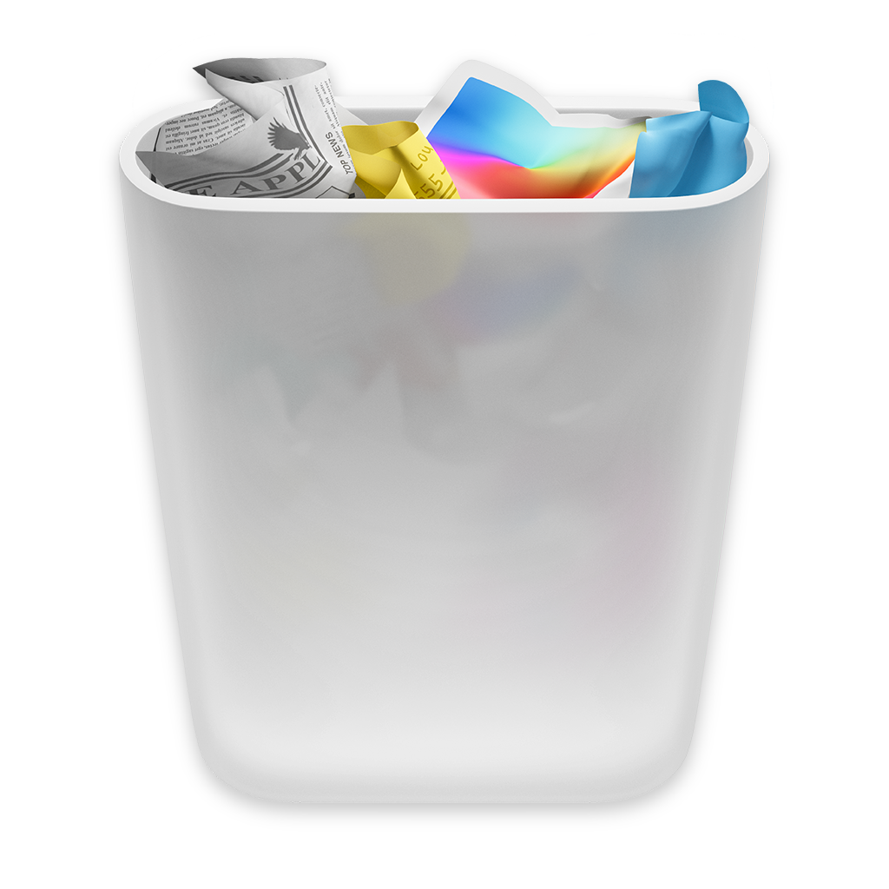

它在你的桌面上到处乱跑、被抓住会顶嘴、能真的吞下文件，还和系统废纸篓实时同步。两只废纸篓，一只干活，一只搞事。
👆 用鼠标去 抓那只乱跑的废纸篓 —— 它跑得可快了
为什么它这么欠揍
该干的活一样不落，但顺便给你的桌面加点活气。
200 像素内就开溜，离得越近跑得越快，还会躲着屏幕边缘。偶尔“跑累了”突然慢半拍。
点中的瞬间头顶弹出一句随机垃圾话——“就这？还想清空我”——嘴硬得很，每次都不一样。
拖个文件朝它扔过去，它会乖乖张嘴接住，一段挤压拉伸的吞咽动画后，文件真的进系统废纸篓。
废纸篓空了它轻松一蹦，被别处塞满了它惊讶一抖，图标自动跟着空 / 满状态变。
抓不住、找不到？菜单里点“聚焦废纸篓”，它立刻闪现到右下角定住 6 秒，方便你扔东西。
不占程序坞、只在菜单栏露脸，点击穿透不挡桌面。原生 Swift + AppKit，几乎不吃资源。
动手玩
把文件丢给它，或者直接戳它一下听它说话——这就是 app 里真实的手感，连图标都是系统原装的。
点 “喂一个” 看它吞下文件、从空桶变满桶；点 “戳它一下” 让它冒一句垃圾话。也能直接点桌面上那只乱跑的桶。
从源码编译
macOS 13+ · Apple Silicon。原生小工具，无需任何依赖。
项目根目录运行 ./build.sh，然后双击 build/RunningTrash.app。
系统设置 → 隐私与安全性 → 辅助功能，勾选 RunningTrash —— 这样它才会逃跑。
菜单栏会冒出一只小废纸篓。去桌面追那只乱跑的，或在菜单里按 F 把它聚焦过来。